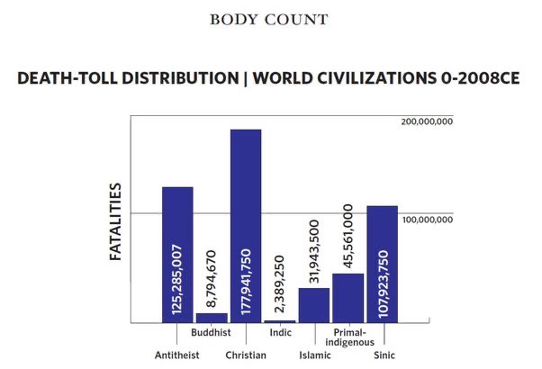
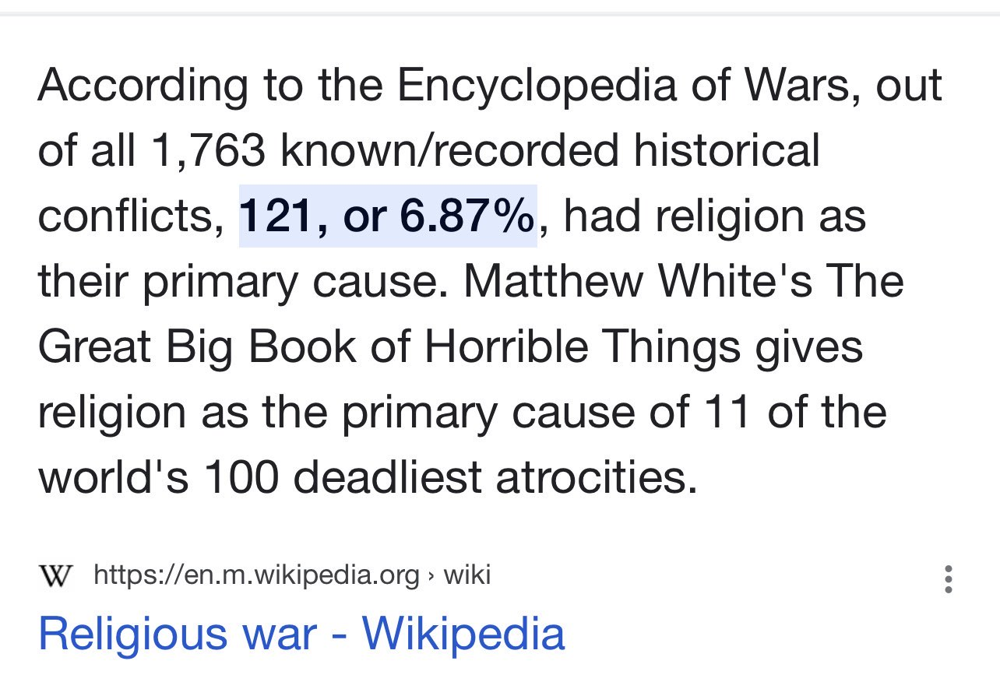

If God created everything, who created God?
Rebuttal #1
A.) If I’m driving a car, who is driving me?
B.)If a painter painted a piece of art, who painted the painter?
C.) You do know that the first premise of that argument is “Whatever BEGINS to exist has a cause.”
Atheist Argument #2
We are all atheists for most of the gods that humanity has ever believed in. Atheists just go one god further.
Rebuttal #2
We are all vegetarians when it comes to not eating most species of animals. Some of us just go a few species further.
Atheist Argument #3
If God is just then why does he punish humans with eternal hell?
Rebuttal #3
If governments are just then why do they send criminals to life in prison, or give sentences beyond any normal human life span?
——
Atheist Argument #4
God says everyone has to worship him for all eternity. What kind of self-centered egomaniac demands that?
Rebuttal #4
Parents demand that children don’t stick forks into electrical sockets. What kind of egomaniac demands control of their kids like that?
Atheist Argument #5
I am amazed at the wonder of nature and the universe on their own merits. I don’t need to believe there is some sky daddy at the bottom of it to reach this conclusion.
Rebuttal #5
I am amazed at the wonder of the smart phone and the automobile on their own merits. I don’t need to believe there are entire teams of people and factories at the bottom of it to reach this conclusion.
Atheist Argument #6
If the threat of hell is the only thing keeping you decent then you have failed as a human being.
Rebuttal #6
If the threat of…
A.) Prison
B.) Social conditioning
C.) Ingrained biological structure predisposing you to moral thinking
D.) An entirely revised definition of morality that cuts out half of your obligations to God, man, and creation
…is the only thing keeping you decent then you have failed as a human being. (Some might even suggest “empathy” which is just another term for morality, and in this case, that would be circular reasoning.)
——
Atheist Argument #7
There have been thousands of Gods and religions today and throughout history. How do you know your religion is correct?
Rebuttal #7
A.) There’s multiple of answers to 2+2 but only 4 is true?
B.) The probability of existence is incredibly high (I am quite certain) and this is due to the evidence we have. If it’s being argued that the nonexistence of countless alleged deities like Zeus or Thor somehow makes God less likely to exist, than that is fallacious. As inferred from the example above, 2+2 not being 3 has no effect on the probability of it being 4.
Atheist Argument #8
Islam is false because I find Islamic law immoral.
Rebuttal #8
A.) That’s like saying “Islam is false because Muslims like the color green, but my favorite color is blue.”
B.) You only see this as an issue because you’ve adopted your own subjective feelings as a lens by which you view these issues rather than being objective about them. Please prove your worldview is true.
C.) I don’t care what you find immoral. Your feelings have no bearing on whether or not Islam is true or false.
D.) Subjective emotional argument 🥱
Come back when you have an objective argument bud
——
Atheist Argument #9
Religion leads to more wars and deaths.
Rebuttal #9
A.) Atheists killed the most people in history following Christians, however Atheists killed the most people in last 100 years alone, on average, Atheists killed 3500 people per day:
……It is worth noting that Atheism has killed the most people in history. Between 1900-2000, atheism has killed over 125 million people, and still counting. That is 3,500 people every day, and 3 people every minute! Making atheism the fastest ideology in killing people in a short period in history….
https://www.tandfonline.com/doi/abs/10.1080/09700161.2017.1377899?journalCode=rsan20
B.) See below:

https://t.co/PxrEN5DgJZ?amp=1
C.) Only around 7% of wars throughout history were caused by religion

Atheist Argument #10
Can God create a stone he can’t lift?
Rebuttal #10
A.)Can you draw a 4-sided triangle?
B.) Your asking an absurd, contradictory question. When we say God is omnipotent, that doesn’t include things that don’t exist in any reality. Your basically asking “Can God be omnipotent and not be omnipotent simultaneously?” But if you argue back “Omnipotence can and should include contradictions” then you’ve automatically lost because then I can argue back “Great then God can create a stone he can’t lift and he can lift it. Problem solved!”
C.) Your question is equivalent of asking “Is God (insert random gibberish)?” or “Can God (insert random gibberish)?” The random gibberish does not exist. It’s not a thing or an entity in reality, so your basically asking nothing.